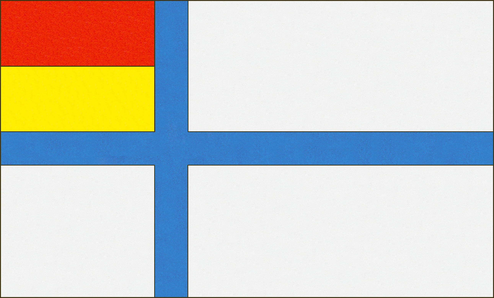
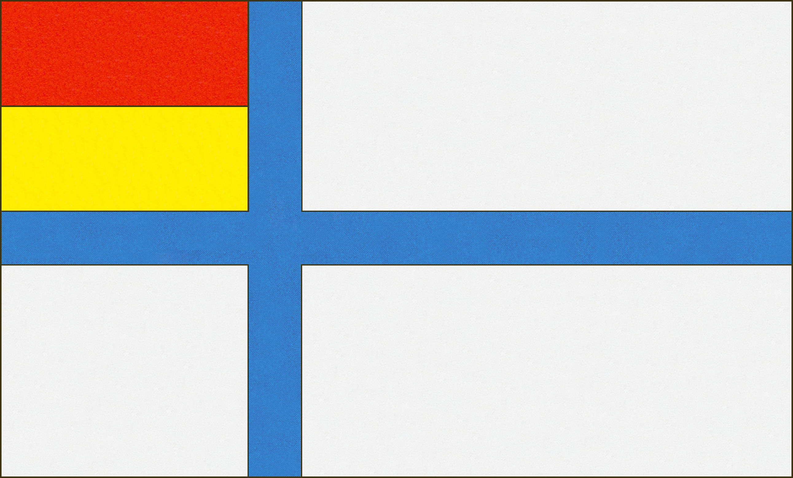

Suomen itsenäisyysjulistuksen ollessa vielä tekeillä, senaatti päätti 04.12.1917 asettaa lippukomitean valmistamaan ehdotusta Suomen kansallis- ja sotalipuksi. Komitea koostui kauppaneuvos Lars Krogiuksesta, arkkitehti Eliel Saarisesta ja fil. tri. U.T. Sireliuksesta. Valtiolipuksi komitea päätyi ehdottamaan punaista leijonalippua ja kauppalipuksi yksinkertaisempaa puna-kelta ristilippua. Jotta kauppalippu erottuisi merellä Tanskan lipusta, komitea lisäsi yhdeksän valkoista ruusua ylempään sisänurkkaan.


Komitea perusteli esitystään seuraavanlaisesti:
» Suomen vaakunan värit määrättiin erään käsikirjoituksen mukaan jo ajanjaksolla 1583-1595. Sanat kuuluivat: "Kullattu leijona kruunu päässä, oikea etukäpälä asestettuna miekalla, takakäpälät polkemassa venäläistä miekkaa, ympärillä yhdeksän hopeoitua ruusua punaisessa taustassa; vaakunan yllä kullattu kruunu punaisine ruhtinaanhattuineen".
Päävärit olivat siis jo silloin punainen ja keltainen, kolmantena värinä hopeaa vastaava valkoinen. Osoittaakseen edustavansa Pohjoismaihin kuuluvaa valtiota, oli komitean mielestä Suomenkin lippu varustettava samalla pystyristillä, joka on ominainen Ruotsin, Norjan ja Tanskan lipuille. Valööriltään heikompana värinä oli keltainen sovellettava ristiksi ja punainen pohjaksi. (...) Keltainen vaikuttaa luopuneena ja erittäinkin edempänä katsottuna valkealta. Koska tämän vuoksi oli syytä luulla, että punakeltainen ristilippu eräissä tapauksissa saattaisi liiaksi Tanskan lipun kaltaisena, jossa on valkoinen risti punaisella pohjalla, aiheuttaa erehdyksiä, päätti komitea sisempään ylikenttään kolmeen riviin sijoittaa Suomen vaakunassa esiytyvät historiallisia maakuntia kuvaavat yhdeksän ruusua, jotka geometrisina kuvioina ovat helpot tehdä. »
Komitean ehdotusta käsiteltiin senaatissa 21.12.1917. Leijonalippu päätettiin hyväksyä, mutta kauppalippu muutettiin Senaattori Alexander Freyn ehdotuksen mukaisesti. Valkoiset ruusut poistettiin ja keltaristi reunustettiin sinisellä ja valkoisella raidalla.

Senaatissa esitettiin myös muita vaihtoehtoja kauppalipuksi. Senaattori Louhivuori ehdotti kauppalipuksi siniristiä valkoisella taustalla, jossa leijonavaakuna sijoitettaisiin ylempään sisänurkkaan. Senaattori Pehkonen vuorostaan olisi muuttanut komitean ehdotusta vaihtamalla ruusujen taustan siniseksi.


Senaatti antoi lipusta lakiesityksen eduskunnalle 05.01.1918:
Suomen valtiolippu, jonka leveys on seitsemäntoista yksikkömittaa ja pituus kaksikymmentäkuusi yksikkömittaa, on kokopunainen, karmiinisinoberi-värinen vaate, jonka keskellä on tankoa vastaan kääntyvä Suomen vaakunan elijona kullankeltaisin ja valkoisin värein. Hallituksen asiana on antaa tarkempia määräyksiä valtiolipun käyttämisestä.
Suomen merenkulku- ja kauppalippu, leveys- ja pituussuhteiltaan samanlainen kuin valtiolipun värinen vaate, jota kullankeltainen risti, reunustettuna kahdella raidalla, niistä sisempi sininen ja ulompi valkoinen, jakaa neljään suorakaiteeseen, joiden kaikkien leveys on 6,5 yksikkömittaa ja tangon puoleisten pituus 8 yksikkömittaa sekä ulompien 14 yksikkömittaa. Keltaisen ristiraidan leveys on 2,5, sinisen 0,40 ja valkoisen 0,35 yksikkömittaa.
Lakiesityksen käsittely eduskunnassa jäi kuitenkin sisällissodan alkaessa kesken. Esitys oli jäänyt jumiin ulkoasianvaliokuntaan mutta senaatti päätti tästä huolimatta vahvistaa 27.02.1918 leijonalipun ja Freyn kauppalipun Suomen virallisiksi lipuiksi.
Eduskunnan ulkoasiainvaliokunta otti senaatin esityksen käsittelyyn, mutta valiokunta ei päässyt ratkaisuun lain hyväksymisestä. Leijonalipusta oltiin montaa mieltä ja etenkin kauppalippua pidettiin huonona. Sen sijaan valiokunta päätti 26.01.1918 suosittaa kilpailua johon kutsuttaisiin taitelijoita suunnittelemaan lippuluonnoksia. Valiokunta myös päätyi hyväksymään väliaikaisen sinivalkoisen lipun siihen asti kunnes virallinen lippu saatiin valittua.
» Suomen lippuna kuluvan vuoden toukokuun 1 päivään asti on käytettävä sinivalkoinen vaate, jonka pituus on 26 yksikkömittaa ja leveys 17 yksikkömittaa ja joka on kokoonpantu kahdesta samankokoisesta suorakaiteen muotoisesta kankaasta, sininen ylempänä, valkoinen alempana".

Valiokunnan väliaikainen lippu ei kuitenkaan koskaan ollut laajemmassa käytössä ja kilpailuakaan ei järjestetty. Sisällissodan taistelut alkoivat seuraavina päivinä ja lippuasian käsittely eduskunnassa pysähtyi. Siirryttyään Vaasaan sodan ajaksi, senaatti päätti 27.02.1918 vahvistaa komitean ehdottaman leijonalipun ja kauppalipun ulkoasiainvaliokunnan mielipiteen vastaisesti.
Sisällissodan päättymisen jälkeen lippukysymys nousi jälleen keskustelun keskiöön eduskunnassa. Punakeltaisten ja sinivalkoisten värien välillä käytävä keskustelu jatkui, mutta sodan tuomat jännitteet kasvattivat kiistan voimakkuutta entisestään. Aiemmin punakeltaisia värejä oli vastustettu niiden skandinavistisen luonteen vuoksi, mutta nyt nuorsuomalaiset, maalaisliittolaiset ja suojeluskuntalaiset vastustivat voimakkaasti punaista väriä myös äskettäisen punakapinan vuoksi. Nuorsuomalaisten edustaja Ahmavaara lausui:
» Kun täällä pääsivät ihmiset valtaan ja loppui tuo ryövärivalta ja senaatin katolle kohotettiin punainen leijonalippu, niin kyllä oli ikävää nähdä sitä. Moni huokaisi, ettei väri muuttunutkaan, vaikka valta tuli jälleen sivistyneiden ihmisten käsiin. »
Maalaisliiton perustaja Santeri Alkio vuorostaan sanoi:
» Olisi veristä pilkkaa ottaa Suomen lipuksi punainen silloin kun kerran Suomessa on täytynyt punainen kapina kukistaa valkoisen merkeissä. »
Ruotsalaiset kansanedustajat edelleen kuitenkin seisoivat leijonalipun ja punakeltaisen ristilipun takana. Punakaartin punaliput eivät heidän mielissään olleet tahranneet Ruotsin vallan aikaisia värejä. Edustaja Schybergson vastasi että mikäli punaväri oli niin kauhea, olisi johdonmukaista samalla poistaa eduskunnasta punaiset matot lattioilta.
Edustaja Ernst Erlander puolusti leijonalippua ja ehdotti kauppalipuksi joko Senaattori Pehkosen ehdotusta ennen sisällissotaa,
tai versiota jossa ylänurkkaan tulisi sinivalkoiset kentät.
Puolestani olen sitä mielipidettä, että n. s. leijonalippu, jossa on Suomen valkoinen ja värit, punainen ja keltainen, on säilytettävä valtiolippuna, koska se on jo vakiintunut vapaustaistelussamme aina vuodesta 1905 siihen saakka kun tämä lippu äsken nostettiin Viaporin harjalle. Puollan sitä myöskin sotalipuksi.
Mitä kauppalippuun tulee, ehdotan, että siihenkin otettaisiin vaakunavärit perusväreiksi. Nämä värit on jo otettu käytäntöön merenkulkulipussa ja soveltuvatkin siihen erittäin hyvin. Kuitenkin voisi niiden lisäksi myöskin valkoista ja sinistä ottaa jollain tavoin yhdistettyinä tähän lippuun, esimerkiksi sen ylempään, etupuoliseen kulmaan. Tällöin voisi ajatella sinistä alaa, jossa olisi vaakunassa esiintyvät 9 valkoista ruusua. Mutta voisi myöskin jakaa alan aivan yksinkertaisesti siniseen ja valkoiseen, mikä menettely ehkä olisi parempikin, koska tähtimäisille merkeille lipun alassa yleensä annetaan erikoinen merkitys, niitä kun käytetään ilmaisemaan valtioliittoon kuuluvien liittovaltioiden lukua.
Kompromissina heräsi ajatus siniristilipusta valkoisella pohjalla, johon punaiset ja keltaiset värit sijoitettaisiin jollain tavoin ylänurkkaan. Edustaja Kokko ehdotti suorakulmaisia kenttiä, jossa keltainen olisi ylimpänä ja punainen alimpana. Edustaja Ingman puolestaan esitti että värit olisi asetettava päinvastoin. K. J. Ståhlberg kritisoi suunnitelmia nurkan väreistä epäsymmetrisinä, ja ehdotti että keltainen ja punainen tulisi sen sijaan sijoittaa siniristin ympärille kuin "rantuina". Keskustelu jatkui perustuslakivaliokunnassa, missä pitkän väittelyn jälkeen edustajat päätyivät lopulta ratkaisuun, jossa keltainen ja punainen sijoitettaisiin nurkkaan kolmioiden muodossa.
 

Valiokunta päätti pyytää Akseli Gallen-Kallelaa suunnittelemaan lippuluonnosta käyttäen valiokunnan kolmiomallia pohjana. Gallen-Kallela oli tähän aikaan yleisesikunnassa töissä piirustuskonttorin päällikkönä suunnittelemassa univormuja, mitaleita ja joukko-osastojen lippuja puolustuslaitokselle. Hän kuitenkin piti valiokunnan sunnitelmaa "aivan hirveänä" ja kieltäytyi ottamasta vastaan kyseistä tehtävää.


Gallen-Kallelan mielestä lipussa tuli käyttää vaakunan punakeltaisia värejä ja oli piirtänyt jo keväällä 1918 kaksi luonnosta jossa punakeltaiset kaksoisristit asetettaisiin valkoiselle taustalle. Valiokunnalle hän myös ehdotti että hän voisi suunnitella sinivalkoisen ristilipun mikäli sinisen ja valkoisen paika vaihdettaisiin. Valiokunta ei kuitenkaan tarttunut tähän tarjoukseen eikä hänen kaksoisristilippujakaan käsitelty.
Gallen-Kallelan kieltäytyessä tehtävästä, hänen alaisensa Eero Snellman ja Bruno Tuukkanen päätyivät suunnittelemaan lippuluonnokset. Snellman ja Tuukkanen eivät myöskään pitäneet valiokunnan pyyntöä onnistuneena. Etenkin punakeltaista ylänurkkaa he pitivät epäonnistuneena. Sen sijaan he jättivät ylänurkan valkoiseksi ja asettivat punakeltaiset värit valtiolipun ja sotalipun osalta siniristin keskelle leijonavaakunan muodossa. Merenkulku- ja kauppalippu jäi puhtaan sinivalkoiseksi.


Perustuslakivaliokunta hyväksyi Snellmanin ja Tuukkasen luonnokset ja laati lakitekstin perusteluineen:
» Valiokunta ei ole voinut yhtyä Hallituksen esityksessä olevaan ehdotukseen, jonka mukaan Suomen lipun perusväreiksi tulisivat Suomen vaakunan värit, punainen ja keltainen. Valkoisen merkeissä on punainen hirmuvalta äsken kukistettu ja Suomen vapaus saavutettu. Valiokunta on sen tähden päättänyt Suomen lipun perusväreiksi ehdottaa valkoista ja sinistä. »
Valiokunnan ehdotus hyväksyttiin eduskunnassa 25.05.1918 ja laki Suomen lipusta vahvistettiin 29.05.1918. Lipun vaakunamalli tarkentui kun Eric O. W. Ehdströmin vaakunaesitys vahvistettiin 17.11.1919. Myöhemmin 12.02.1920 eduskunnan n.k. Sinettikomitea muutti lipun vaakunan muotoa poistamalla vaakunan päältä kruunun sillä se ei koettu enää tasavaltalaiselle Suomelle sopivaksi. Samoin vaakunan kilven muotoa muutettiin nelikulmaisemmaksi jotta se olisi helpompi sommitella ristin keskelle.


Vuonna 1978 Suomen lippu sai tämänpäiväisen muotonsa. Lipun määritelmä tarkistettiin ja päivitettiin värien osalta uusien kansainvälisten standardien mukaisesti. Samalla vaakunaa muutettiin jälleen kerran. Kilvestä poistettiin pohjaan jäänyt pieni kieleke ja leijona päivitettiin Olof Erikssonin vuonna 1970 piirtämään yksinkertaistettuun malliin.


Samaan aikaan kun lipusta väiteltiin eduskunnassa, käytiin lehdistössä myös asian tiimoilta vilkasta keskustelua. Lippuehdotuksia oli taas tarjolla sekä yksityishenkilöiltä, lehdiltä että erinäisiltä seuroilta. Mielipiteet jakautuivat edelleen punakeltaisten ja sinivalkoisten värien, leijonalipun ja ristilipun kannattajiin.
Insinööri Hugo Nyberg Joensuusta lähetti 09.12.1917 lippukomitean Uuno Sireliukselle ehdotuksen Suomen lipuksi. Kauppalippu tuli ympäröidä joka reunalta valkoisella reunuksella. Postilippuun tulisi postitorvi sopivaan kohtaan ja tullilippuun merkuriuksen sauva

Helsingin suomalainen seura antoi eduskunnalle 15.12.1917 ehdotuksen Suomen lipuksi.

Varatuomari K. Jänteen ehdotus tammikuulta 1918

Suomen Taiteilijaseuran lippukomitean puheenjohtaja Heikki Tandfelt esitti seuran ehdotuksen kauppalipuksi Työmies-lehdessä nro. 14, 16.01.1918. Pääehdotus oli senaatin lippukomitean kauppalipun muunnos, jossa valkoiset ruusut vaihdettiin valkoisiin reunoihin keltaristin ympärille. Vaihtoehtona seura myös esitti puhdasta punakelta-ristilippua.

» Mitä ensinnäkin siniwalkoiseen lippuun tulee, ei allekirjoittanut ole tawannut ainoatakaan taiteilijaa - arkkitehtiä, maalaria, kuwanweistäjää tai koristetaieilijaa - joka olisi sitä kannattanut. Siniwalkoinen on köyhin ja kylmin ajateltawista wäriyhtymistä, mistä tosiasiasta jo on huomauttanut Goethe, ensimmäinen värisointuteorian laatija.
Hallituksen ehdottama siniwalkoinen-punakeltainen kompromissilippu on yleisesti katsottu sangen epäonnistuneeksi. Se ei ole kaunis. Se on korea kuin lastenkamarilippu ja kirjawa kuin sirkusilmoitus. On ylimalkaan mahdotonta edullisesti sowittaa yhteen lippuwäreja sininen, walkoinen, punainen ja keltainen. Sitäwastoin on waltion lippukomitean ehdottama punakeltainen ristilippu, ylemmässä sisäalassa olevine waakunaruusuineen, saanut lukuisasti kannattajia taiteilijain keskuudessa. Ainoastaan siihen ajatellut ruusut ovat herättäneet wastalauseita.
Tämän wuoksi on Taiteilijaseuran lippukomitea omasta puolestaan kannattanut lippua, jossa waakunaruusujen walkea wäri on somistettu kapeaksi reunustaksi keltaisen ristin ympärille. Walkoinen esiintyy siten kieltämättä hywin edullisesti punaisen ja keltaisen wäliwärina. Ja tämä sowitelma on heraldisesti oikea. Mutta kun sitä wastaan saattaa syyllä huomauttaa, että walkeat reunustat, katsottuina pitkän matkan päästä, lisääwät Suomen lipun yhdennäköisyyttä Tanskan lipun kanssa, on myöskin ajateltu, että ne tämän wuoksi woitaisiin jättää pois. Näin ollen saisimme yksinkertaisen ristilipun, jossa olisi waakunamme pääwärit. Ja kun useat tunnetut arkkitehtimme wastikään ovat puolustaneet tällaista lippua, joka käytännössä olisi mukawin, lienee syytä toiwoa, että eduskunta ei jätä huomioonottamatta tätä kahden eri lippukomitean esittämää mielipidettä, jota myöskin Laiwanpäällystöyhdistys on kannattanut. »
Varatuomari J. Penger ehdotti 18.05.1918 kansallis- ja kauppalipuksi valko-sini-keltalippua. Sotalipun pohjaksi tulisi leijonalippu ja kansallislippu sijoitettaisiin ylempään sisänurkkaan.

Luotsi- ja majakkalaitoksen pääjohtaja Gustaf Oskar Axel Wreden ehdotus valtiolipuksi.

Työskennellessään vuonna 1919 n.k. sinettikomiteassa, taiteilija Eric O. W. Ehrström luonnosteli eri vaihtoehtoja vaakunan asettelemisesta ristin keskelle, joista yksi oli seuraavanlainen: